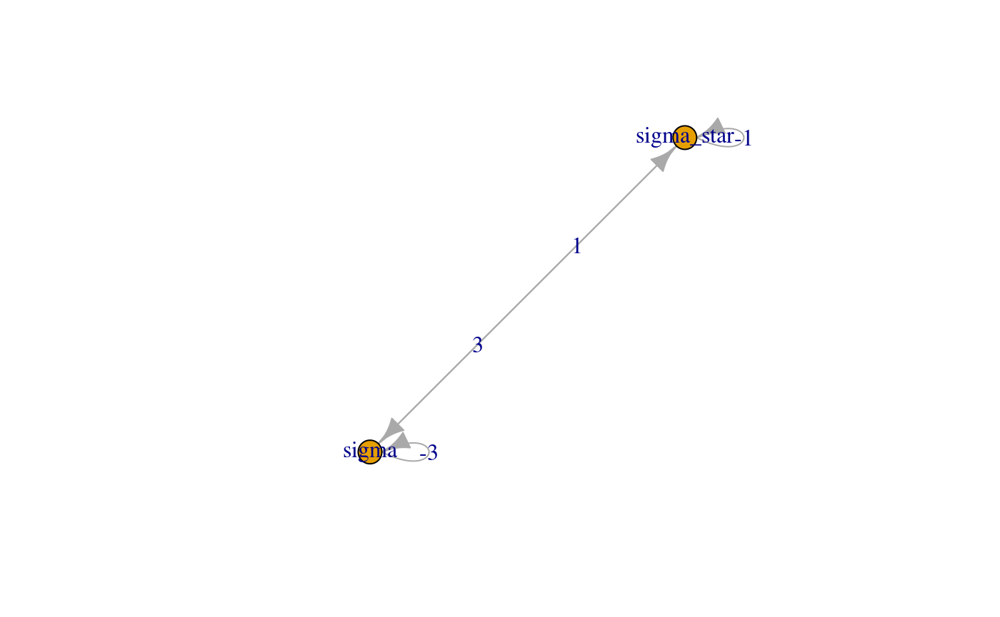
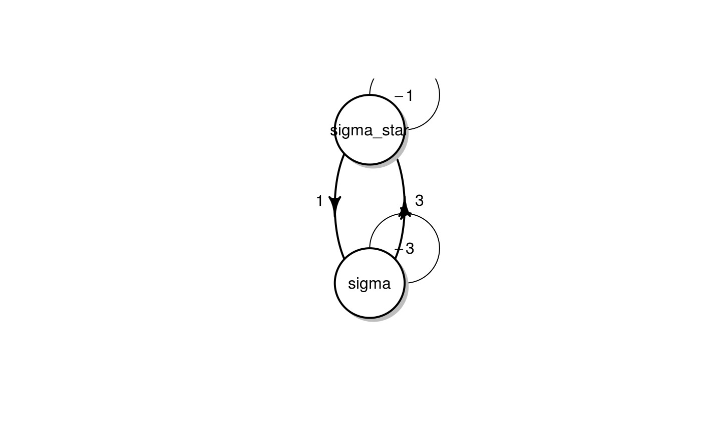

vignettes/GSoC-2017_additions.Rmd
GSoC-2017_additions.RmdThe package provides ExpectedTime function to calculate average hitting time from one state to another. Let the final state be j, then for every state \(i \in I\), where \(I\) is the set of all possible states and holding time \(q_{i} > 0\) for every \(i \neq j\). Assuming the conditions to be true, expected hitting time is equal to minimal non-negative solution vector \(p\) to the system of linear equations(Norris 1998): \[\begin{equation}
\begin{cases}
p_{k} = 0 & k = j \\
-\sum_{l \in I} q_{kl}p_{k} = 1 & k \neq j
\end{cases}
\label{eq:EHT}
\end{equation}\]
For example, consider the continuous time markovchain which is as follows:
library(markovchain)
states <- c("a","b","c","d")
byRow <- TRUE
gen <- matrix(data = c(-1, 1/2, 1/2, 0, 1/4, -1/2, 0, 1/4, 1/6, 0, -1/3, 1/6, 0, 0, 0, 0),
nrow = 4,byrow = byRow, dimnames = list(states,states))
ctmc <- new("ctmc",states = states, byrow = byRow, generator = gen, name = "testctmc")The generator matrix of the ctmc is: \[ M = \left(\begin{matrix} -1 & 1/2 & 1/2 & 0\\ 1/4 & -1/2 & 1/4 & 1/6\\ 1/6 & 0 & -1/3 & 1/6\\ 0 & 0 & 0 & 0\\ \end{matrix}\right) \]
Now if we have to calculate expected hitting time the process will take to hit state \(d\) if we start from \(a\), we apply the \(ExpectedTime\) function. \(ExpectedTime\) function takes four inputs namely a \(ctmc\) class object, initial state \(i\), the final state \(j\) that we have to calculate expected hitting time and a logical parameter whether to use RCpp implementation. By default, the function uses RCpp as it is faster and takes lesser time.
## [1] 7We find that the expected hitting time for process to be hit state \(d\) is 7 units in this case.
The package provides a function probabilityatT to calculate probability of every state according to given ctmc object. The Kolmogorov’s backward equation gives us a relation between transition matrix at any time t with the geneartor matrix(Dobrow 2016):
Here we use the solution of this differential equation \(P(t) = P(0)e^{tQ}\) for \(t \geq 0\) and \(P(0) = I\). In this equation, \(P(t)\) is the transition function at time t. The value \(P(t)[i][j]\) at time \(P(t)\) describes the conditional probability of the state at time \(t\) to be equal to j if it was equal to i at time \(t=0\). It takes care of the case when ctmc object has a generator represented by columns. If inital state is not provided, the function returns the whole transition matrix \(P(t)\).
Also to mention is that the function is also implemented using RCpp and can be used used to lessen the time of computation. It is used by default. Next, We consider both examples where intial state is given and case where initial state is not given.
In the first case, the function takes two inputs, first of them is an object of the S4 class ‘ctmc’ and second is the final time \(t\).
## a b c d
## a 0.41546882 0.24714119 0.2703605 0.06702946
## b 0.12357060 0.63939068 0.0348290 0.20220972
## c 0.09012017 0.02321933 0.7411205 0.14553997
## d 0.00000000 0.00000000 0.0000000 1.00000000Here we get an output in the form of a transition matrix.
If we take the second case i.e. considering some initial input:
## [1] 0.41546882 0.24714119 0.27036052 0.06702946In this case we get the probabilities corresponding to every state. this also includes probability that the process hits the same state \(a\) after time \(t=1\).
The package provides a plot function for plotting a generator matrix \(Q\) in the form of a directed graph where every possible state is assigned a node. Edges connecting these nodes are weighted. Weight of the edge going from a state \(i\) to state \(j\) is equal to the value \(Q_{ij}\). This gives a picture of the generator matrix.
For example, we build a ctmc-class object to plot it.
energyStates <- c("sigma", "sigma_star")
byRow <- TRUE
gen <- matrix(data = c(-3, 3,
1, -1), nrow = 2,
byrow = byRow, dimnames = list(energyStates, energyStates))
molecularCTMC <- new("ctmc", states = energyStates,
byrow = byRow, generator = gen,
name = "Molecular Transition Model") Now if we plot this function we get the following graph:

The figure shown is built using the \(igraph\) package. The package also provides options of plotting graph using \(diagram\) and \(DiagrameR\) package. Plot using these packages can be built using these commands:

Similarly, one can easily replace \(diagram\) package with \(DiagrammeR\)
Continuous-time Markov chains are mathematical models that are used to describe the state-evolution of dynamical systems under stochastic uncertainty. However, building models usign continuous time markovchains tkae in consideration a number of assumptions which may not be realistic for the domain of application; in particular; the ability to provide exact numerical parameter assessments, and the applicability of time-homogeneity and the eponymous Markov property. Hence we take ICTMC into consideration.
More technically, an ICTMC is a set of “precise” continuous-time finite-state stochastic processes, and rather than computing expected values of functions, we seek to compute lower expectations, which are tight lower bounds on the expectations that correspond to such a set of “precise” models.
For any non-empty bounded set of rate matrices \(L\), and any non-empty set \(M\) of probability mass functions on \(X\), we define the following three sets of stochastic processes that are jointly consistent with \(L\) and \(M\):
From a practical point of view, after having specified a (precise) stochastic process, one is typically interested in the expected value of some function of interest, or the probability of some event. Similarly, in this work, our main objects of consideration will be the lower probabilities that correspond to the ICTMCs.
A map \(Q_{l}\) from \(L(X)\) to \(L(X)\) is called a lower transition rate operator if, for all \(f,g \in L(X)\), all \(\lambda \in R_{\geq 0}\), all \(\mu \in L(X)\), and all \(x \in X\)(Thomas Krak 2016):
A map \(T_{l}\) from \(L (X )\) to \(L (X )\) is called a lower transition operator if, for all \(f,g \in L(X)\), all \(\lambda \in R_{\geq 0}\), all \(\mu \in L(X)\), and all \(x \in X\)(Thomas Krak 2016):
ImpreciseprobabilityatT functionNow I would like to come onto the practical purpose of using ICTMC classes. ICTMC classes in these package are defined to represent a generator that is defined in such a way that every row of the generator corresponding to every state in the process is governed by a separate variable. As defined earlier, an imprecise continuous time markovchain is a set of many precise CTMCs. Hence this representation of set of precise CTMCs can be used to calulate transition probability at some time in future. This can be seen as an analogy with probabilityatT function. It is used to calculate the transition function at some later time t using generatoe matrix.
For every generator matrix, we have a corresponding transition function. Similarly, for every Lower Transition rate operator of an ICTMC, we have a corresponding lower transition operator denoted by \(L_{t}^{s}\). Here \(t\) is the initial time and \(s\) is the final time.
Now we mention a proposition(Thomas Krak 2016) which states that: Let \(Q_{l}\) be a lower transition rate operator, choose any time \(t\) and \(s\) both greater than 0 such that \(t \leq s\), and let \(L_{t}^{s}\) be the lower transition operator corresponding to \(Q_{l}\). Then for any \(f \in L(X)\) and \(\epsilon \in R_{>0}\), if we choose any \(n \in N\) such that:
\[n \geq max((s-t)*||Q||,\frac{1}{2\epsilon}(s-t)^{2}||Q||^{2}||f||_v)\]
with \(||f||_{v}\) := max \(f\) - min \(f\), we are guaranteed that(Thomas Krak 2016)
\[ ||L_{t}^{s} - \prod_{i=1}^{n}(I + \Delta Q_{l}) || \leq \epsilon\]
with \(\Delta := \frac{s-t}{n}\)
Simple put this equation tells us that, using \(Q_{l}g\) for all \(g \in L(X)\) then we can also approximate the quantity \(L_{t}^{s}\) to arbitrary precision, for any given \(f \in L(X)\).
To explain this approximate calculation, I would take a detailed example of a process containing two states healthy and sick, hence \(X = (healthy,sick)\). If we represent in form of an ICTMC, we get:
\[ Q = \left(\begin{matrix} -a & a \\ b & -b \end{matrix}\right) \] for some \(a,b \in R_{\geq 0}\). The parameter \(a\) here is the rate at which a healthy person becomes sick. Technically, this means that if a person is healthy at time \(t\), the probability that he or she will be sick at time \(t +\Delta\), for small \(\Delta\), is very close to \(\Delta a\). More intuitively, if we take the time unit to be one week, it means that he or she will, on average, become sick after \(\frac{1}{a}\) weeks. The parameter \(b\) is the rate at which a sick person becomes healthy again, and has a similar interpretation.
Now to completely represent the ICTMC we take an example and write the generator as:
\[ Q = \left(\begin{matrix} -a & a \\ b & -b \end{matrix}\right) : a \in [\frac{1}{52},\frac{3}{52}],b \in [\frac{1}{2},2] \]
Now suppose we know the initial state of the patient to be sick, hence this is reprsented in the form of a function by: \[ I_{s} = \left(\begin{matrix} 0 \\ 1 \end{matrix}\right) \] We observe that the \(||I_{s}|| = 1\). Now to use the proposition mentioned above, we use the definition to calculate the lower transition operator \(Q_{l}\) Next we calculate the norm of the lower transition rate operator and use it in the preposition. Also we take value of \(\epsilon\) to be 0.001.
Using the preposition we can come upto an algorithm for calculating the probability at any time \(s\) given state at initial time \(t\) and a ICTMC generator(Thomas Krak 2016).
The algorithm is as follows:
Input: A lower transition rate operator \(Q\), two time points \(t,s\) such that \(t \leq s\), a function \(f \in L(X )\) and a maximum numerical error \(\epsilon \in R_{>0}\).
Algorithm:
Output:
The conditional probability vector after time \(t\) with error \(\epsilon\). Hence, after applying the algorithm on above example we get the following result:
$ g_{n} = 0.0083$ if final state is \(healthy\) and \(g_{n} = 0.141\) if the final state is \(sick\). The probability calculated is with an error equal to \(\epsilon\) i.e. \(0.001\).
Now we run the algorithm on the example through R code.
states <- c("n","y")
Q <- matrix(c(-1,1,1,-1),nrow = 2,byrow = TRUE,dimnames = list(states,states))
range <- matrix(c(1/52,3/52,1/2,2),nrow = 2,byrow = 2)
name <- "testictmc"
ictmc <- new("ictmc",states = states,Q = Q,range = range,name = name)
impreciseProbabilityatT(ictmc,2,0,1,10^-3,TRUE)## [1] 0.008259774 0.140983476The probabilites we get are with an error of \(10^{-3}\)
The package provides freq2Generator function. It takes in a matrix representing relative frequency values along with time taken to provide a continuous time markovchain generator matrix. Here, frequency matrix is a 2-D matrix of dimensions equal to relative number of possible states describing the number of transitions from a state \(i\) to \(j\) in time \(t\), which is another parameter to be provided to the function. The function also allows to chose among three methods for calculation of the generator matrix.(Alexander Kreinin 2001)
Three methods are as follows:
See reference for details about the methods.
Here is an example matrix on which freq2Generator function is run:
sample <- matrix(c(150,2,1,1,1,200,2,1,2,1,175,1,1,1,1,150),nrow = 4,byrow = TRUE)
sample_rel = rbind((sample/rowSums(sample))[1:dim(sample)[1]-1,],c(rep(0,dim(sample)[1]-1),1))
freq2Generator(sample_rel,1)## [,1] [,2] [,3] [,4]
## [1,] -0.024212164 0.01544797 0.008764198 0
## [2,] 0.006594821 -0.01822834 0.011633520 0
## [3,] 0.013302567 0.00749703 -0.020799597 0
## [4,] 0.000000000 0.00000000 0.000000000 0Consider set of states A,B comprising of states from a markovchain with transition matrix P. The committor vector of a markovchain with respect to sets A and B gives the probability that the process will hit a state from set A before any state from set B.
Committor vector u can be calculated by solving the following system of linear equations(StackOverflow 2015):
\[ \begin{array}{l} Lu(x) = 0, x \notin A \cup B \\ u(x) = 1, x \in A \\ u(x) = 0, x \in B \end{array} \] where \(L = P -I\).
Now we apply the method to an example:
transMatr <- matrix(c(0,0,0,1,0.5,0.5,0,0,0,0,0.5,0,0,0,0,0,0.2,0.4,0,0,0,0.8,0.6,0,0.5),nrow = 5)
object <- new("markovchain", states=c("a","b","c","d","e"),transitionMatrix=transMatr, name="simpleMc")
committorAB(object,c(5),c(3))## a b c d e
## 0.4444444 0.8888889 0.0000000 0.4444444 1.0000000Here we get probability that the process will hit state “e” before state “c” given different initial states.
Currently computation of the first passage time for individual states has been implemented in the package. firstPassageMultiple function provides a method to get first passage probability for given provided set of states.
Consider this example markovchain object:
statesNames <- c("a", "b", "c")
testmarkov <- new("markovchain", states = statesNames, transitionMatrix =
matrix(c(0.2, 0.5, 0.3,
0.5, 0.1, 0.4,
0.1, 0.8, 0.1), nrow = 3, byrow = TRUE,
dimnames = list(statesNames, statesNames)
))Now we apply firstPassageMultiple function to calculate first passage probabilities for set of states \("b", "c"\) when intial state is \("a"\).
## set
## 1 0.8000
## 2 0.6000
## 3 0.2540
## 4 0.1394This shows us the probability that the process will hit any of the state from the set after n number of steps for instance, as shown, the probability of the process to hit any of the states among \("b", "c"\) after \(2\) steps is \(0.6000\).
The package provides a function noofVisitsDist that returns the PDF of the number of visits to the various states of the discrete time markovchain during the first N steps, given intial state of the process.
We will take an example to see how to use the function on a markovchain-class object:
transMatr<-matrix(c(0.4,0.6,.3,.7),nrow=2,byrow=TRUE)
simpleMc<-new("markovchain", states=c("a","b"),
transitionMatrix=transMatr,
name="simpleMc")
noofVisitsDist(simpleMc,5,"a")## a b
## 0.348148 0.651852The output clearly shows the probabilities related to various states of the process.
The package provides a function expectedRewards that returns a vector of expected rewards for different initial states. The user provides reward values, a vector \(r\) of size equal to number of states having a value corresponding to every state. Given a transition matrix \([P]\), we get the vector of expected rewards \(v\) after \(n\) transitions according to the equation as follows(Gallager 2013):
\(v[n] = r + [P]*v[n-1]\)
Applying this equation on a markovchain-class object
transMatr<-matrix(c(0.99,0.01,0.01,0.99),nrow=2,byrow=TRUE)
simpleMc<-new("markovchain", states=c("a","b"),
transitionMatrix=transMatr)
expectedRewards(simpleMc,1,c(0,1))## [1] 0.01 1.99The package provides a function expectedRewardsBeforeHittingA that returns the value of expected first passage rewards \(E\) given rewards coressponding to every state, an initial state. This means the function returns expected reward for given initial state \(s_{0}\), number of transitions \(n\) and for a set of states \(A\) with a constraint such that the process does not hit any of the states that belong to state \(A\). \(S\) is the set of all possible states.
The function uses an equation which is as follows:
\[E = \sum_{i=1}^{n}{1_{s_{0}}P_{S-A}^{i}R_{S-A}}\] here \(1_{s_{0}} = [0,0,...0,1,0,...,0,0,0]\), 1 being on \(s_{0}\) position and \(R_{S-A}\) being the rewards vector for \(S-A\) state.
The package provides a function is.CTMCirreducible that returns a boolean value stating whether the ctmc object is irreducible. We know that a continuous time markovchain is irreducible if and only if its embedded chain is irreducible(Sigman 2009).
We demonstrate an example running the function:
energyStates <- c("sigma", "sigma_star")
byRow <- TRUE
gen <- matrix(data = c(-3, 3,
1, -1), nrow = 2,
byrow = byRow, dimnames = list(energyStates, energyStates))
molecularCTMC <- new("ctmc", states = energyStates,
byrow = byRow, generator = gen,
name = "Molecular Transition Model")
is.CTMCirreducible(molecularCTMC)## [1] TRUEThe package provides predictHommc function. This function provides a simulation system for higher order multivariate markovchains. The function assumes that the state probability distribution of the jth sequence at time \(r+1\) depends on the state probability distribution of all the sequences at n previous mon=ments of time i.e. \(t = r\) to \(t = r-n+1\) . Hence the proposed model takes the form mathematically as:(Ching, Ng, and Fung 2008)
\[ X_{r+1}^{j} = \sum_{k=1}^{s}\sum_{h=1}^n{\lambda_{jk}^{(h)}P_{h}^{(jk)}X_{r-h+1}^{(k)}}, \ \ \ j = 1,2,....s, \ \ r = n-1,n,... \] with initals \(X_{0}^{(k)},X_{1}^{(k)},......,X_{n-1}^{(k)} \ (k = 1,2,...s)\). Here,
\(\lambda_{jk}^{(k)}, \ 1 \leq j,k \leq s, \ 1 \leq h \leq n \ \ \ and \ \ \ \sum_{k=1}^{s}\sum_{h=1}^{n}{\lambda_{jk}^{(h)} = 1}, \ \ \ j = 1,2,....s.\)
Now we run an example on sample hommc object for simulating next 3 steps usinf predictHommc function. THe function provides a choice of entering inital states according to the hommc object. In case the user does not enter inital states, the function takes all initial states to be the first state from the set of states.
statesName <- c("a", "b")
P <- array(0, dim = c(2, 2, 4), dimnames = list(statesName, statesName))
P[,,1] <- matrix(c(0, 1, 1/3, 2/3), byrow = FALSE, nrow = 2)
P[,,2] <- matrix(c(1/4, 3/4, 0, 1), byrow = FALSE, nrow = 2)
P[,,3] <- matrix(c(1, 0, 1/3, 2/3), byrow = FALSE, nrow = 2)
P[,,4] <- matrix(c(3/4, 1/4, 0, 1), byrow = FALSE, nrow = 2)
Lambda <- c(0.8, 0.2, 0.3, 0.7)
ob <- new("hommc", order = 1, states = statesName, P = P,
Lambda = Lambda, byrow = FALSE, name = "FOMMC")
predictHommc(ob,3)## [,1] [,2] [,3]
## [1,] "b" "b" "a"
## [2,] "a" "a" "a"A Continuous-time markovchain with generator \(Q\) and stationary distribution \(\pi\) is said to be time reversible if:(Dobrow 2016)
\[ \pi_{i}q_{ij} = \pi_{j}q_{ji} \]
Intuitively, a continuous-time Markov chain is time reversible if the process in forward time is indistinguishable from the process in reversed time. A consequence is that for all states i and j, the long-term forward transition rate from i to j is equal to the long-term backward rate from j to i.
The package provides is.TimeReversible function to check if a ctmc object is time-reversible. We follow with an example run on a ctmc object.
energyStates <- c("sigma", "sigma_star")
byRow <- TRUE
gen <- matrix(data = c(-3, 3,
1, -1), nrow = 2,
byrow = byRow, dimnames = list(energyStates, energyStates))
molecularCTMC <- new("ctmc", states = energyStates,
byrow = byRow, generator = gen,
name = "Molecular Transition Model")
is.TimeReversible(molecularCTMC)## [1] TRUEAlexander Kreinin, Marina Sidelnikova. 2001. “Regularization Algorithms for Transition Matrices” 4. ALGO RESEARCH QUARTERLY.
Ching, Wai-Ki, Michael K Ng, and Eric S Fung. 2008. “Higher-Order Multivariate Markov Chains and Their Applications.” Linear Algebra and Its Applications 428 (2). Elsevier: 492–507.
Dobrow, Robert P. 2016. Introduction to Stochastic Processes with R. John Wiley & Sons.
Gallager, Robert G. 2013. Stochastic Processes: Theory for Applications. Cambridge University Press.
Norris, J. R. 1998. Markovchains. Cambridge University Press.
Sigman, Karl. 2009. “Continuous Time Markovchains.” Columbia University.
StackOverflow. 2015. https://math.stackexchange.com/questions/1450399/probability-that-a-chain-will-enter-state-5-before-it-enters-state-3?newreg=82f90b66b949495a91661caad24db915.
Thomas Krak, Arno Siebes, Jasper De Bock. 2016. “Imprecise Continuous-Time Markov Chains.” arXiv.